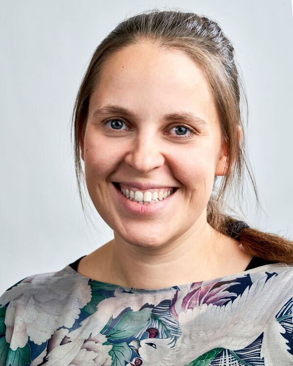

About Us
We are the organizers of various participant-driven events across the globe (with a home base in Seattle, Washington) and maintain this documentation.
Maintainers
Anthony Arendt
| Anthony Arendt holds a joint appointment at the University of Washington as a Principal Research Scientist at the Applied Physics Laboratory and a Senior Research Fellow at the eScience Institute. Anthony conducts research on the impacts of glacier change on water resources and sea level using remote sensing datasets. He is interested in empowering scientists to work collaboratively toward solving complex enviornmental problems through data sharing and the building of open source software. |  |
Daniela Huppenkothen
|  | Daniela Huppenkothen is the Associate Director at the [Institute for Data-Intensive Research in Astrophysics and Cosmology (DIRAC)](https://dirac.astro.washington.edu) at the University of Washington and a Data Science Fellow at the University of Washington’s [eScience Institute](https://escience.washington.edu), where she works on astrostatistics and machine learning for astronomical time series, and is interested in everything from asteroids to black holes. She is excited about teaching data science and machine learning to astronomers and researchers from other scientific disciplines, and about finding new ways to get researchers across different scientific domains to talk to one another. |
Contributors
We don't have any contributors yet! If you'd like to contribute (and please do!), check out our how to contribute section!